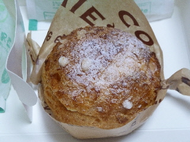

ラ・クレーム デ・クレールのシュークリーム
2014/06/18
包装がちょっとお洒落なシュークリームです。

シュークリームの蓋が外れるタイプなんですが、コレって食べやすくていいですね。
沢山入っているクリームを、蓋ですくいながらいただきました。
大きな口開けなくていいので、食べやすいです。
シュー生地の粉が落ちる心配もあんまりしなくていいです。
よけいな気を使わなくていいので、クリームの味をたんのう出来ました。
島根県松江市学園2丁目24-1
2014/06/18
包装がちょっとお洒落なシュークリームです。

シュークリームの蓋が外れるタイプなんですが、コレって食べやすくていいですね。
沢山入っているクリームを、蓋ですくいながらいただきました。
大きな口開けなくていいので、食べやすいです。
シュー生地の粉が落ちる心配もあんまりしなくていいです。
よけいな気を使わなくていいので、クリームの味をたんのう出来ました。
2007/08/13
洋菓子屋さんのソフトクリームとか言われて販売している商品ですね。
純粋に、洋菓子屋のソフトクリームってどんなの？って思って気になってました。
洋菓子屋さんなのでクリームたっぷりの濃厚ソフトをイメージしてたんですが、牛乳とコーヒとかに入れるミルク（クリーム、マリーム、クリープっぽいもの）の中間の味に感じました。なのであっさりめでした。
私は、ここのケーキ屋さんは甘さ控えめなイメージを持っているので、この味はこのお店にあってるのかもって思いました。
普通に売ってる甘いミルク味のソフトと違って牛乳自体の味がするのは変わってて面白いですね。
石見の方でもっと牛乳味の強いアイスがあったんですが、それを食べたときはかなりビックリした記憶があります。